Slide 1.표지
keepSource Material:
CG01(entire)브랜드 메시지 CG01-ST01
- "Small actions, BIG DIFFERENCE"
- "지속가능한 배터리 재활용을 위한 화학소재 및 친환경 차세대 공정기술"
confirmedimg1 워드마크(참고용, Hard Rule상 등록 CI 자산 우선)
Slide 2.기업 소개
keepSource Material:
CG02(entire)회사 개요 CG02-ST01/ST02
- 슬로건: "첨단 화학 소재와 차세대 친환경 공정으로 폐배터리 순환경제 선도"
- 기업명 주식회사 코솔러스 / 대표자 김성현 / 임직원 27명 / 소재지 전주·익산·완주·군산 / 비전(table_1, 전 항목 confirmed)
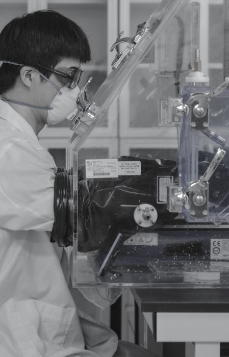
uncertainimg2 실험실 사진 추정(내용 미확인)
제외: 조직구성(CG20) — 원본 제목뿐, 본문·표·이미지 전무. 병합할 콘텐츠 자체가 없어 CG02 단독으로 완결.
Slide 3.배터리 밸류체인의 환경·지정학적 리스크 merge (경계선 사례)
Source Material:
CG03-ST01(entire, EC1+EC2), CG03-ST02(entire)병합 근거: "하나의 상위 메시지를 공동으로 구성" — 지정학적 집중 리스크(EC1)와 환경·사회적 비용(EC2)이 함께 있어야 "채굴 기반 공급망의 구조적 문제"라는 메시지가 완성된다. 단, 두 클러스터 각각 독립 근거가 충분해 2슬라이드 분리도 유효한 대안(사용자 판단 필요 지점).
1-c로 복원됨 — "광산채굴 기준 수요-공급 미스매치 발생"(CG03-ST01 최상위, 어느 evidence_cluster에도 속하지 않던 문장). Claim A/B 어디에도 자연스럽게 편입되지 않아 Supporting Evidence(두 Claim의 공통 배경)로 별도 유지.
Claim A. 글로벌 공급망의 중국 집중도 EC1
- 전략광물 20개 중 19개 정제 1위 (IEA)
- 전략광물 정제 평균 점유율 70% (IEA)
- 글로벌 블랙매스 처리 비중 89% (Benchmark Mineral Intelligence)
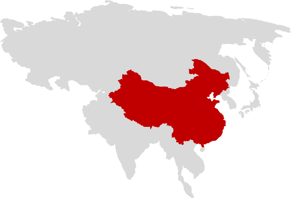
uncertainimg3 중국 강조 세계지도(육안 재확인 안 됨, Optional 상한)Claim B. 채굴 기반 공급의 환경·사회적 비용 EC2
- 니켈 1톤당 133톤 폐기물 발생 (Earthworks)
- 채굴 산업의 노동 및 인권문제(정성적 보강, Optional)
Slide 4.북미 ESS 시장, 고성장의 변곡점
keepSource Material:
CG04(entire)CG03과 목적이 다름(리스크 회피 vs 성장 기회) — 콘텐츠가 적다는 이유만으로 병합하지 않음.
북미 ESS 시장 CAGR CG04-ST01
- 에너지 용량(GWh) 기준 CAGR 31.6% (SNE Research 등)
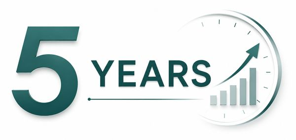
confirmedimg4 "5 YEARS" 스톡 그래픽 — 데이터 차트 아님, 장식용- 연도별 GWh 계열·원본 차트 없음(NC-01) — 임의 재구성 안 함
Slide 5.순환경제 비즈니스 모델
keepSource Material:
CG05(entire)3개 병렬 축 CG05-ST01
- 폐자원 회수 → 배터리 원재료 수요부족 해결 (원인→결과)
- 유해물질·온실가스 저감 → 환경오염 저감 (원인→결과)
- 제조 → 재활용 → 제조 순환 → 신공급망 구축 (순환 관계, 3마디 보존)
Slide 6.1세대 공정의 한계와 코솔러스의 솔루션 merge
Source Material:
CG06(entire), CG07-ST01/ST02(entire)병합 근거: "문제와 해결" — CG06(1세대 한계)·CG07(1.5세대 솔루션)이 정확히 Before/After 쌍.
Before — 1세대 공정 한계 CG06-ST01
- 낮은 선택성 / 제한된 동작 환경(pH 등) / 상분리 불안정 / 부산물 과다발생(망초 등)
제외img5 = GLENCORE 로고로 확인됨. "1세대 공정 개념도"가 아니었음(구 스키마 오류 정정) — Before 근거로 미사용
After — 1.5세대 솔루션(RECYION Series) CG07-ST01
- 기존 D2EHPA(1세대) 대비 RECYION Series(1.5세대)로 재활용 효율 개선
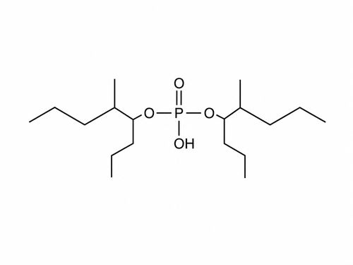
uncertainimg6 D2EHPA/RECYION 중 어느 쪽인지 미확인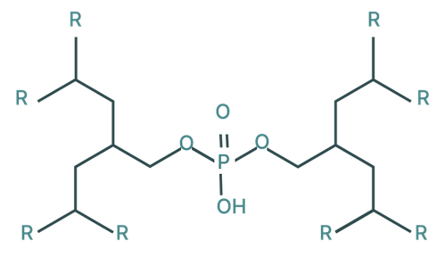
uncertainimg7 위와 동일 사유로 라벨 미확정Slide 7.고성능 추출제 — 경쟁사 대비 공정 효율
keepSource Material:
CG08(entire)CG09(경제효과)와 목적이 다름(경쟁사 비교 vs 자체 경제성) — 분리 유지. 경쟁력 매트릭스(CG10)는 재구성 불가로 미배정.
경쟁사 대비 공정시간·첨가제 비교 CG08-ST01/ST02
- 공정시간 — COSOLUS 기준, 벨기에 S사 100%↑, 중국 K사 50%↑
- 첨가제 사용량 — 벨기에 10%+, 중국 5%+
1-c로 복원됨 — 각주 "*블랙매스 1톤당 첨가제 사용량 기준"을 기존 첨가제 Evidence에 괄호로 직접 편입.
제외: 경쟁력 매트릭스(CG10, 3사×5기준 아이콘 그리드) — 원본이 재구성 불가능한 자유배치 그리드("[이미지 추출 불가]" 표시 남음). 이 슬라이드 근거로 메시지 충분히 전달된다고 판단해 별도 배정 안 함.
Slide 8.추출단수 저감이 만드는 CAPEX·OPEX 경제성
keepSource Material:
CG09(entire)CG08과 Relationship 유형이 다름(원인→결과 vs 비교) — 분리 유지.
이론단수 저감 → CAPEX/OPEX 효과 CG09-ST01/ST02
- 이론단수 5단→4단(20% 감소, table_8 confirmed)
- CAPEX: 추출 효율 2~5% 개선
- OPEX: 망초 5%+ 저감, 연간 니켈 16,000톤 기준 4,800톤 저감(계산 정합 확인)
confirmed / Optionalimg8 평형선/조업선/단수계산 범례
Slide 9.직접리튬추출(DLE) — 재활용 공정 안에서 완성
keepSource Material:
CG11(entire)CG12(산업 기술지형 비교)와 범위·목적이 달라 분리.
코솔러스 4단계 통합공정 vs 기존 DLE(증발법) CG11-ST01
- 침출 → 불순물 제거 → Mn 추출 → Co 추출 → Ni 추출 → Li 추출 → 역추출(6단계 전체)
- 기존 DLE(증발법): 1단계, Li 회수율 3.12%
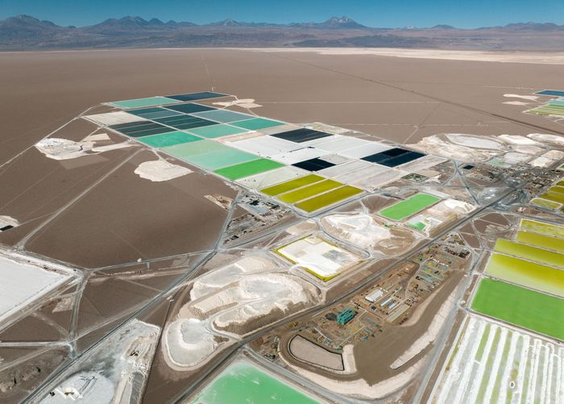
confirmedimg10 칠레 아타카마 염호 유형 항공사진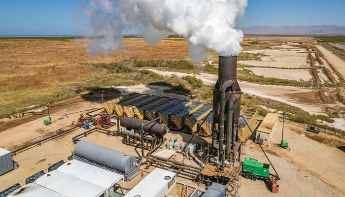
confirmedimg11 지열발전 연계 플랜트Slide 10.DLE 기술 동향 비교
keepSource Material:
CG12(entire)4개 방식 비교(흡착제/추출제/분리막/전기화학) CG12-ST01/ST02
- table_12: 작동원리/TRL/장점/단점 × 4방식 (confirmed)
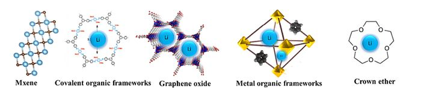
confirmed / Optionalimg12 5종 흡착재료 구조 비교(Mxene/COF/GO/MOF/Crown ether)- 정정: H+/O/H2O 전기화학 다이어그램(img19/28)은 이 그룹 소속이 아님(실제로는 Slide 12) — cross_group_ref 확정 근거 없어 미사용(NC-06)
Slide 11.DLE 핵심 경쟁력 — 추출제·분리막 결합 기술 merge
Source Material:
CG13(entire), CG14(entire)병합 근거: "개념과 근거" — CG13(4가지 강점)이 CG14의 두 Claim을 뒷받침하는 Shared Supporting.
핵심 성과 + 기여도 분해 CG14-ST01
- 재자원화율 >90%, 공정비용 <5,500원/kg(리튬선물 가격 전제 각주 포함)
- 기여도 분해: 분리막&THz 기술 3%→90% / 핵심소재 3%→50%(두 값 모두 보존)
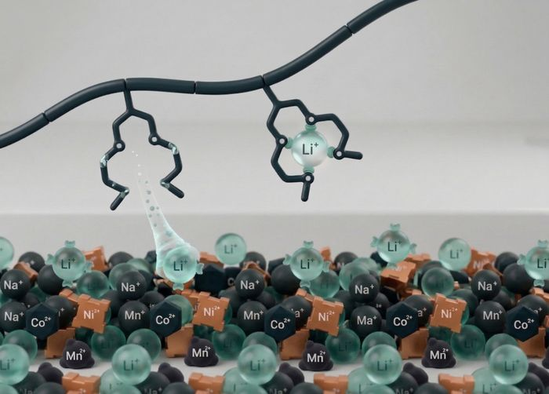
confirmed / Optionalimg13 폴리머 사슬의 Li⁺ 선택 포집 개념도공유 근거 — 4가지 구조적 강점 CG13-ST01
- 빠른 물질전달 / 우수한 재활용 효율 / 연속 운전 용이 / 첨가제 소모량 감소(Optional)
제외: RECYION501 표의 '회수 효율' 값 — 원문 셀 자체가 비어있어 확인 불가(NC-07).
Slide 12.친환경 차세대 배터리 재활용 공정(2세대) merge
Source Material:
CG15(entire), CG16(entire)병합 근거: CG15(개요)+CG16(상세)가 동일 이미지 자산 6종을 공유하며 서로 없이는 불완전.
1-c로 복원됨 — CG15의 "재활용 양극재"(산출물)와 "폐흑연 처리 포함"(범위)이 CG16의 정리된 5단계 흐름에 밀려 빠져있었음 → 기존 Output Evidence에 직접 편입.
4단계 순차 공정 CG15-ST01 + CG16-ST01
- 유도가열 → 전처리 공정 → 블랙매스(양극재용/음극재용, 폐흑연 처리 포함) → 부유선별
- Output: 재활용 양극재 + 고순도 정제흑연 + 코발트·니켈 회수
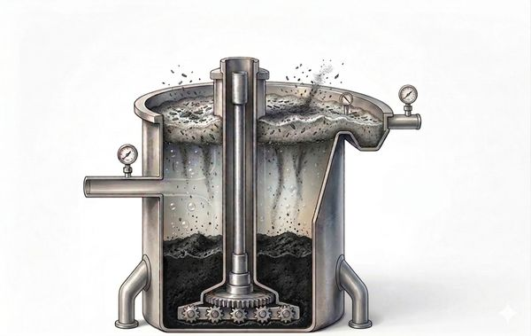
confirmed / Optionalimg14 반응조 단면 개념도(컨셉 일러스트, 실사진 아님)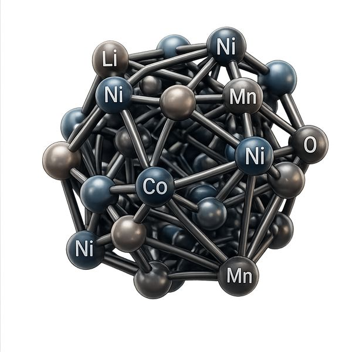
confirmed / Optionalimg17 NCM 분자모델(컨셉 일러스트)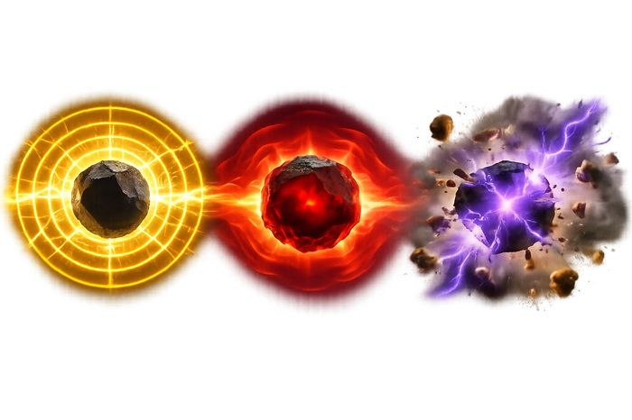
confirmed / Optionalimg18 3단계 효과 그래픽(컨셉 일러스트)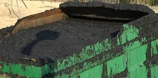
confirmed / Optionalimg20 산업용 컨테이너 실사진(16개 슬롯 중 유일한 실사진)- 대규모 정정: 구 스키마는 이 이미지들을 "COSOLUS 유도가열 실제 설비 사진(img62~65)"으로 서술했으나, 재확인 결과 대부분 컨셉 일러스트이며 실사진은 위 img20 1장뿐이다. 전체 16개 이미지 슬롯 중 대표 4장만 표시(나머지는
material_analysis_sample.jsonCG15/CG16 참조). 이 사실은 Layout/Visual 재판단 시 반드시 재검토해야 함(이번 범위 아님).
Slide 13.2세대 공정의 가격·기술 경쟁력 merge
Source Material:
CG17(entire), CG18(entire)병합 근거: CG17(코발트회수 성능·특허)이 CG18(경쟁력 주장)의 보강 근거.
기존 소성로 대비 가격·기술 경쟁력 CG18-ST01
- 공정시간 1분 이내(vs 10시간+) / 승온속도 200배 / 에너지 432Wh/kg(64% 절감) / 흑연순도 99%+
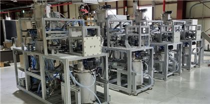
confirmed / Optionalimg34 실제 COSOLUS 설비 실사진(신규 발견)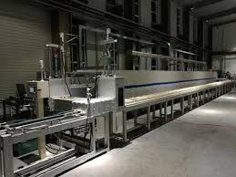
confirmed / Optionalimg35 실제 설비 실사진(신규 발견)공유 근거 — 코발트 회수 신뢰도 CG17-ST01/ST02
- Co 회수 순도 >95%, PCT 2건 출원(Optional)
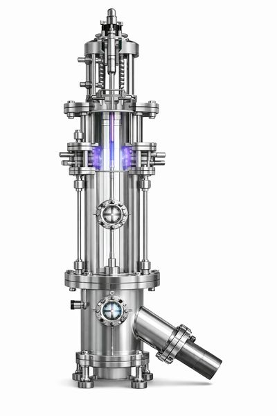
confirmed / Optionalimg30 건식환원 설비 렌더링(신규 발견, 나머지 img31~33은 구조 소속만 confirmed)- 이 슬라이드의 이미지 6장(CG17 4장+CG18 2장, 대표 3장만 표시)은 구 스키마의
images_available: [](0장)에서 이번에 새로 발견됨.
제외: 경쟁력(CG19) — 원본 제목뿐, 본문 전무. CG18과 제목상 주제 중복.
Slide 14.투자 포인트
keepSource Material:
CG21(entire)CG22(시장진출)와 병합하지 않음 — 투자 Ask 메시지가 실행 디테일에 묻히는 것 방지.
4개 병렬 항목 CG21-ST01
- 기술력: 추출제 최상위 합성·정제 / 친환경 공정(건식환원·유도가열) / Closed-loop system
- 사업화 방향: (1.5세대) XX하이텍·XX코 PoC 중 / (2세대) XX자동차 신공급망, 일본·인니 진출(마스킹 실명 원문 유지)
- 투자라운드: Series A2, 목표 80억원
- 투자금 사용: 국외법인 설립·운영 / 공장 건설(추출제 CAPA, 공정파일롯)
Slide 15.일본·인도네시아 시장 진출 merge
Source Material:
CG22(entire), CG23-ST08(partial, cross_group_ref)병합 근거: "동일 대상의 다른 측면" — 아시아 시장 진출이라는 하나의 메시지를 일본·인도네시아 두 측면이 구성.
1-c로 복원됨 — "[목표] 일본과 인도네시아를 전략적 거점으로 5억 명 이상의 아시아 경제권에서 성장"이 두 Claim 어디에도 안 들어가 있었음 → 두 국가 Claim의 공통 배경이 되는 Supporting Evidence로 별도 유지.
Claim 1. 인도네시아 CG22-ST01/ST02 + CG23-ST08(cross-ref)
- 전기자전거 업체 1대주주와 투자 논의 중
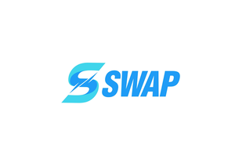
confirmedimg36 SWAP (CG22 자체 구조)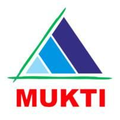
confirmedimg76 MUKTI (CG23 cross-ref, 배포 asset과 크기 일치)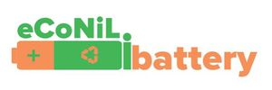
confirmedimg77 eCoNiL (CG23 cross-ref)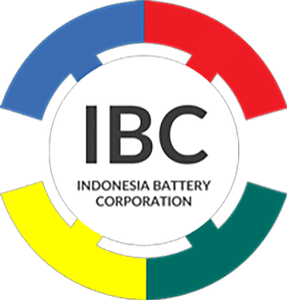
confirmedimg78 IBC (CG23 cross-ref)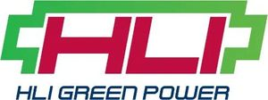
제외img79 HLI 추정 — 정체 불확실 + 과거 미사용 이력, 확정 근거로 사용 안 함Claim 2. 일본 CG22-ST01/ST02
- 현지투자사·재료업체 등과 투자 논의 중(익명 서술)
confirmedimg37 Panasonic Energy
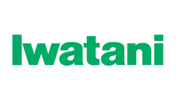
confirmedimg38 Iwatani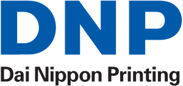
confirmedimg39 DNP- 로고 이미지 정체는 confirmed이나, 본문의 익명 서술("현지투자사·재료업체 등")과 이 3개사가 실제로 동일 대상이라는 매칭은 원문에서 확인 불가(NC-04) — 단정 문구 금지.